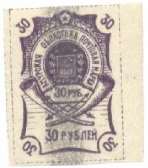
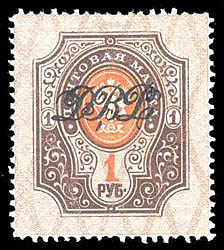
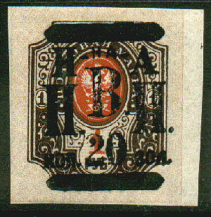

(genuine)
Return To Catalogue - Russia overview
Note: on my website many of the
pictures can not be seen! They are of course present in the
catalogue;
contact me if you want to purchase the catalogue.
5 kop green 10 kop red 15 kop violet 50 kop blue 1 Rub brown
Value of the stamps |
|||
vc = very common c = common * = not so common ** = uncommon |
*** = very uncommon R = rare RR = very rare RRR = extremely rare |
||
| Value | Unused | Used | Remarks |
| All values | c | - | |
(genuine)
In 1920, during the Russian Civil War, a set of 5 stamps were released both perforated and imperforated supposedly as stamps of the Belarus region. I have been told that these phantasy stamps were counterfeited at least three times. In the 5, 10 and 50 kopeck and the 1 ruble genuine stamps the girl has a long thin chin line or dimple that does not touch the jaw line. Forgeries have a dark spot on the chin line or if they have a short chin line, they have colored guidelines between the stamps. The 15 kopeck stamp is from a different original design and a different forgery. Forgeries are detected by looking at the last letter in the upper frame. In the forgeries the flag from the previous letter touches it. In genuine stamps, the flage does not touch the it.

(Forgery)

More coarsely printed set of forgeries. Images obtained from
Alberto Fiorentini.

Yet another type, image obtained from Alberto Fiorentini.
(forged postmark? reduced size)
Other bogus issues for this country:
I have seen imperforated specimens of all 3 stamps as well.
5 k lilac 10 k blue 15 k yellow 20 k red 50 k green
Value of the stamps |
|||
vc = very common c = common * = not so common ** = uncommon |
*** = very uncommon R = rare RR = very rare RRR = extremely rare |
||
| Value | Unused | Used | Remarks |
| All values | vc | vc | |
Even though these stamps are very common, many
forgeries exist. They are descirbed in detail in 'Focus on
forgeries' by V. Tyler. Genuine stamps are printed clearer
than the forgeries. Additional information:
In the 5 k value, the '5's should not touch the
circles anywhere. The circle surrounding the '5's should consist
of two smaller circles (not one fat circle as in the forgeries).
See also http://www.numonesidentifier.com/country/39/.
In the 15 k value, the 'C' and 'A' of 'OKCA'
touch each other. In the forgeries, they don't.
1 k orange 3 k red 4 k red and orange 5 k orange 7 k blue (exists perforated) 10 k blue and red 15 k red 20 k blue and red 30 k green and orange 50 k brown and orange
Value of the stamps |
|||
vc = very common c = common * = not so common ** = uncommon |
*** = very uncommon R = rare RR = very rare RRR = extremely rare |
||
| Value | Unused | Used | Remarks |
| 1 k | c | c | |
| 3 k | c | c | |
| 4 k | c | c | |
| 5 k | * | * | |
| 7 k | * | * | Exists rouletted |
| 10 k | * | * | |
| 15 k | ** | ** | |
| 20 k | * | * | |
| 30 k | *** | *** | |
| 50 k | *** | *** | |

2 R red 3 R green 5 R blue 15 R brown 30 R violet
Value of the stamps |
|||
vc = very common c = common * = not so common ** = uncommon |
*** = very uncommon R = rare RR = very rare RRR = extremely rare |
||
| Value | Unused | Used | Remarks |
| 2 R | ** | ** | |
| 3 R | ** | ** | |
| 5 R | ** | ** | |
| 15 R | ** | ** | |
| 30 R | ** | ** | |
After occupation of the Amur region by sowjet troups, these stamps were sold with a fat blue pen cancel (as in the pictures). Other overprints:


(Further surcharges also exist, reduced sizes)
This overprint was applied to the following
stamps:
On imperforate stamps of Russia: 1 k
yellow, 2 k green, 3 k red, 7 k on 15 k lilac and green, 10 k on
3 R 50 brown and green and 1 R brown and orange.
On perforated stamps of Russia: 2 k
green, 3 k red, 3 k on 35 k lilac and green, 4 k red, 4 k on 70 k
brown and orange, 7 k on 15 k lilac and blue, 10 k blue, 10 k on
3 R 50 brown and green, 14 k blue and red, 15 k lilac and blue,
20 k blue and red, 20 k on 14 k blue and red, 25 k green and
violet, 35 k lilac and green, 50 k lilac and green and 1 R brown
and orange.
On stamps of Siberia (already overprinted stamps of Russia, see
example above): 35 on 2 k green and 70 k on 1 k yellow.
On postal savings stamp of Russia
Furthermore this overprint seems to exist on postal savings stamps of Russia (1 k on 5 k and 2 k on 10 k)
2 k green 4 k red 5 k brown 10 k blue
Value of the stamps |
|||
vc = very common c = common * = not so common ** = uncommon |
*** = very uncommon R = rare RR = very rare RRR = extremely rare |
||
| Value | Unused | Used | Remarks |
| 2 k | c | c | |
| 4 k | c | c | |
| 5 k | c | c | |
| 10 k | * | c | |
Overprinted with russian text and rectangle (Priamur region)(in blue, for 10 k in red)
(Reduced sizes)
2 k green 4 k red 5 k brown 10 k blue Surcharged 1 k on 2 k green 3 k on 4 k red
Value of the stamps |
|||
vc = very common c = common * = not so common ** = uncommon |
*** = very uncommon R = rare RR = very rare RRR = extremely rare |
||
| Value | Unused | Used | Remarks |
| 2 k | ** | ** | |
| 4 k | ** | ** | |
| 5 k | ** | ** | |
| 10 k | ** | ** | |
| 1 k on 2 k | ** | ** | |
| 3 k on 4 k | ** | ** | |
Overprinted with '26.V. 1921-1922 P B P'
(Reduced sizes)
2 k green 4 k red 5 k brown 10 k blue
Value of the stamps |
|||
vc = very common c = common * = not so common ** = uncommon |
*** = very uncommon R = rare RR = very rare RRR = extremely rare |
||
| Value | Unused | Used | Remarks |
| 2 k | *** | *** | |
| 4 k | *** | *** | |
| 5 k | *** | *** | |
| 10 k | *** | *** | |
The first overprint was also applied on stamps of Russia (prepared but not issued):


(Overprinted in russian in a rectangle, non issued, 1922)
These overprints are uncommon to very rare.
Fiscal stamps, similar to Russian fiscal stamps, but with arms of Siberia, example:
(Reduced size)
Stamps of Russia, overprinted 'H HA H B. P. P.' (1921), examples:




{kind=link}
{kind=link}
{kind=link}